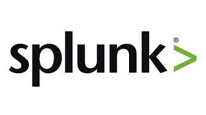

List of Corporate Partners with QA Intern Positions

- Salesforce
- Splunk
- Workday
- eBay
 Login
Login
Testing and Quality Assurance means to make sure that the product or service is meeting the requirements and standards. The role of QA is to confirm that the specifications are met to the requirements. By doing this, it ensures that product is safe to use and consumers are going to be satisfied by the end result. How is it done? Well, by testing of course. A QA role requires them constantly test the products to meet its requirements. This can apply to every industry and not just in software. Everything is tested before it is released. Your shampoo, clothing, water, furniture, etc... Testing and QA is important in every aspect a business.